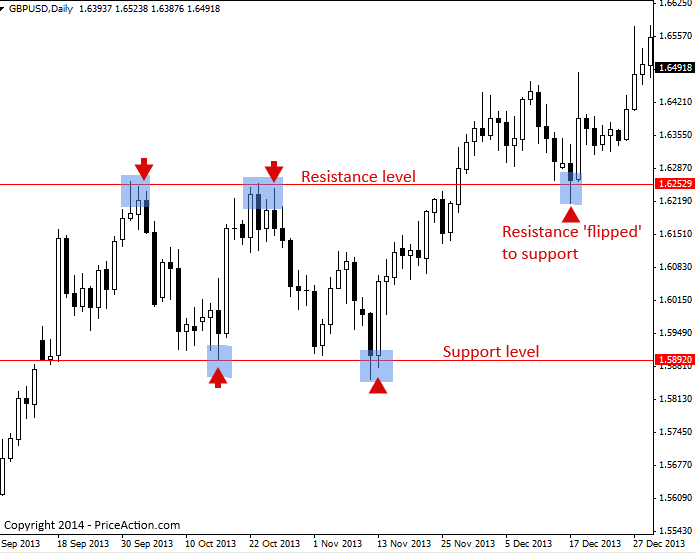
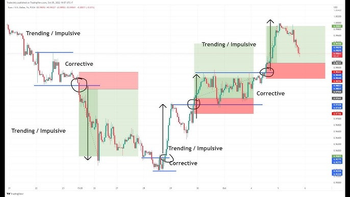
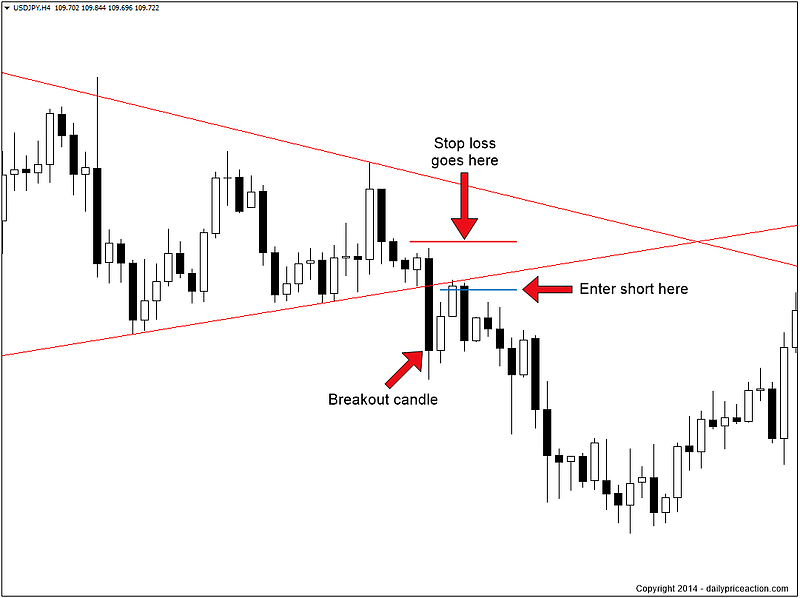

Forex Trading strategy for Beginners
Master how to read Forex charts, use moving averages, and follow trends like a pro. This complete beginner’s guide to Forex Technical Analysis teaches you how to trade smarter, control risk, and understand price behavior — all without guesswork.
5.1 Introduction to Technical Analysis
Technical analysis is one of the most widely used methods for analyzing the Forex market. It involves studying price charts, patterns, and indicators to predict where the market might move next. Unlike fundamental analysis, which focuses on economic news and events, technical analysis is all about what the charts reveal.
The foundation of technical analysis lies in the idea that price reflects everything. Every piece of information—political events, economic data, trader psychology—is already built into the price. Therefore, by studying past price movements, traders believe they can anticipate future moves.
Beginners should understand three key principles of technical analysis:
1. Price discounts everything: The market price reflects all available information.
2. Prices move in trends: Markets often move in identifiable directions (uptrend, downtrend, sideways).
3. History repeats itself: Human psychology causes similar chart patterns to appear over time.
Some of the most common tools in technical analysis include:Trendlines to identify the direction of the market.
Support and resistance levels to find key price zones.
Indicators like moving averages, RSI, or MACD to confirm trade setups.
For beginners, technical analysis is useful because it gives structure to trading decisions. Instead of guessing, you can develop a strategy based on what the chart shows. However, it’s important not to overload yourself with too many indicators. Start simple, focus on one or two tools, and build confidence from there.
5.2 Moving Averages Explained
A moving average (MA) helps traders smooth out price fluctuations and see the overall direction of the market. Instead of getting distracted by small movements, a moving average shows you the bigger trend picture.
1. Simple Moving Average (SMA): Takes the average price over a set period (e.g., 20 days). It is straightforward and ideal for beginners.
2. Exponential Moving Average (EMA): Gives more weight to recent prices, reacting faster to market changes — perfect for short-term traders.
Use of Moving Averages:
- Identify trend direction (above = uptrend, below = downtrend).
- Act as dynamic support/resistance.
- Spot “golden cross” and “death cross” signals.
5.3 Trend Following Strategy
“The trend is your friend.” Trend-following means trading in the direction of the dominant market movement rather than against it.
Types of Trends: Uptrend (higher highs/lows), Downtrend (lower highs/lows), Sideways (range-bound market).
Example Strategy: Buy when the price is above the 50-day MA and making higher highs; place stop-loss below the last swing low.
5.4 Simple Breakout Strategy
Breakouts occur when price moves strongly above resistance or below support, signaling a potential new trend.
Steps: Identify key levels → Wait for breakout confirmation → Enter trade → Set stop-loss → Target 1:2 risk/reward.
Tip: Always confirm breakouts with volume or candle strength to avoid false signals.
5.5 Basic Risk Management Rules
Risk management is the backbone of successful Forex trading. Without it, even the best strategy fails.
- Never risk more than 1–2% per trade.
- Always use stop-loss orders.
- Maintain a 1:2 risk-to-reward ratio.
- Avoid over-leveraging.
- Don’t chase losses — stick to your plan.
Final Note: Trading success comes from discipline, not luck. Protect your capital, follow your rules, and your profits will follow.